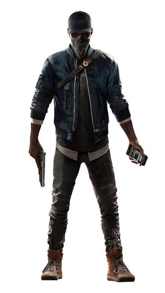
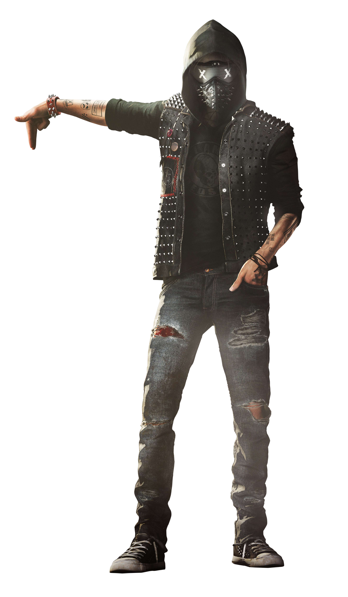

|
 |
bro is the main character his name is marcus holloway of the game we will play throught out with him and all to know more about him click here |
|---|
|
 |
bro is the insane character his name is Reginald Blechman but he has his HEROIC NAME Wrench . also good things comes at last we will play thru him at the final moments of the game here |
|---|
| Name | Age | Residence | Profession | STATUS |
|---|---|---|---|---|
| Marcus_Holloway | 34 | San Francisco | Grey hat hacker,Vigilante,Hacktivist | Alive |
| Reginald_blechman | 38 | San Francisco | Grey hat hacker,Anarchist,Hacktivist | Alive |
| Horatio Carlin | 22 | San Francisco | Grey hat hacker,Operations Manager,Hacktivist,Nudle Programmer | Dead |